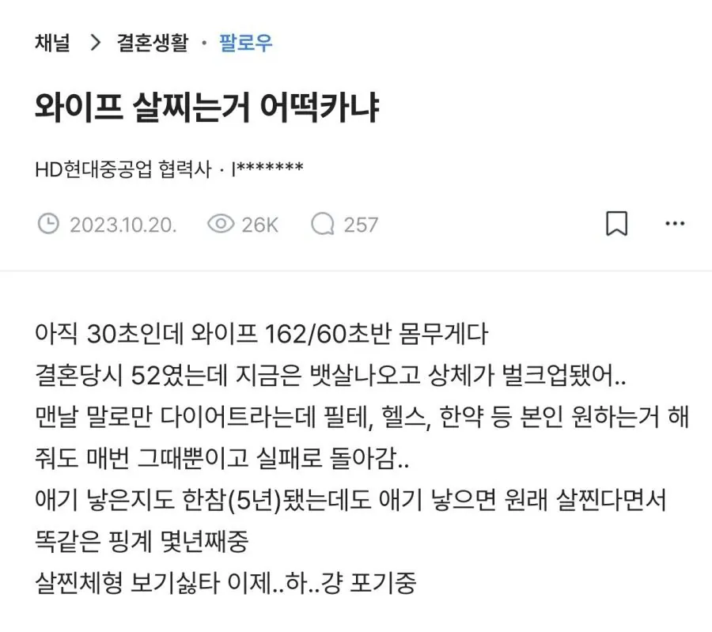

회사 162/55 여자 상사 로우킥 후리면 다리 분질러질거 같던데?
162/60 이면 평범 아닌가?

회사 162/55 여자 상사 로우킥 후리면 다리 분질러질거 같던데?
162/60 이면 평범 아닌가?
162에 60이 돼지 아니라는 애들이 개웃기네 ㅋㅋㅋㅋ
대체 어떤 여자들을 만나고 다니는건지 궁금할지경
남자랑 달라..... 돼지까진 아니어도 통통 이상임
체형이 어떠냐에 따라 다를것 같음.
그래도 키에서 100빼고 저정도면 보통 체형이지.
결혼전은 아주 이상적인 형태였고..
마운자로 꽂으면 해결됨
같은 체중이라도 근육량 따라 천차만별
얼굴이랑 골격 체형마다 천차만별이 맞음
다만 썰 쓴 본인 보기에 그렇다면 그런거겠지
지가 선택해놓고 기집년 마냥 씹퉁대고있냐 데리고 나가서 운동시키던가 위고비 꽂아주던가 지 와이프를 밖에서 욕하고 있네ㅋㅋㅋ
ㅇㄱㄹㅇ임
가슴 크기따라 다르겠지만 여자가 키빼몸 100이면 통뚱 언저리 던데
160에 60키로가 어케 평범임? 뚱땡이를 좋아함?
가슴에따라 편차는있지만 일반적으론 살집 꽤 있는 무게임
머가평범해 키빼몸 105는 기본이여
현여친이 169에 62인데 절대 안말랐다.. 160에 60이면 유도선수 아닌이상에야 돼지야... 정신들차려
마운자로 맞게해
여자 162에 60이면 살집 꽤 있는건데 평체라는 놈들은 뭐냐 도대체;
162/55가 다리가 분질러져? ㅋㅋㅋㅋㅋ
몸매좋은애들을 구경조차 못해봤나 ㅋㅋ
60키로면 뱃살 접힐걸
여자는 남자보다 지방비율이 더 높다. 운동돼지가 아니라 그냥 돼지면 그 격차는 더 심하다.
같은 뚱보라도 남성호르몬 도핑 차이 진짜 장난아님.
ㅈ돼지인데
여자 6자 들어가면 보기에 뚱뚱함
160/45
보지들 모르는 자지들 많노
키빼몸=110 이상이 마른거고 그 이하부터는 통통이다노
내가 딱162인데 60은돼지맞음 옷사이즈66,L입을껄?
4중4후 마름 5초 55까지 보통 그이상 돼지임
그리고 출산하고 살...알아서 빠지던데...안빠지는 사람들은 그만큼 많이 뭘 먹는거같음
50으로 임신해서 출산때70찍고 지금 4후5초 왔다갔다함
아기낳고 체형변하고 그럴수있음 우리와이프도 살엄청쪘었는데
남자몸무게 생각하면 안된다 여자들이 근육량이 적어서 생각보다 존나 가벼움. 헬스중독자급 아니고서야 남자 몸무게 생각하니 대충 저키에 저 몸무게면? 하다가 실제로 보면 씹돼지 등판함
좆돼지지 160초반이면50초반넘으면돼지다